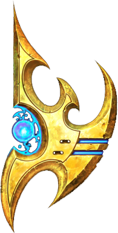

Ahogy minden játéknál megszokhattuk, itt is rendelkezésünkre fognak állni új egységek.
El lehet felejteni a sima "építs bázist meg sereget, aztán irtsd ki az ellenfelet" küldetéseket, nem olyan egyszerű az.
Vigyázat még forró! :)
A Protoss a kimagaslóan fejlett technológiájának és potens telepatikus hatalmának köszönhetően messze a legerősebb faj a galaxisban. Ám a Zerggel folytatott háborúzás megtörte őket, hiszen legnagyobb harcosaik se voltak képesek ellenállni az ellenség hatalmas számainak, így társadalmuk több évszázados filozófiai tételei összeomlottak, majd amikor a betolakodók megostromolták szeretett szülőbolygójukat, az Aiurt, a Protoss menekülni kényszerült saját világából. A túlélők a valaha elűzött testvéreik által lakott Shakurason leltek menedéket, és most azon munkálkodnak, hogy új technológiákkal és ismeretekkel győzedelmesen visszaszerezhessék anyabolygójukat, ugyanakkor ennek reményében még az ősi időkből hátramaradt félelmetes fegyverek bevetésétől sem riadnak vissza. A protossok soha nem voltak túl termékenyek, ezért élő katonai erejüket mesterséges értelemmel felruházott alakulatok különféle variációival pótolják. Legnagyobb harcosaik egyszerre ötvözik a fejlett technológiát saját rettegett pszionikus képességeikkel. Mindazonáltal a protossnak számítani kell a mozgékonyságra és a meglepetés erejére is, nehogy az elhúzódó harcok alatt előnyeik semmivé váljanak. Kétségtelen, hogy legnagyobb erejüket flottájuk adja, hajóik bőven elegendőek ahhoz, hogy porrá zúzzák ellenségeiket.